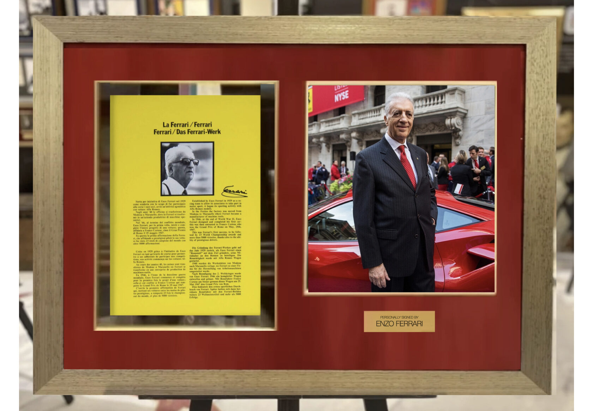
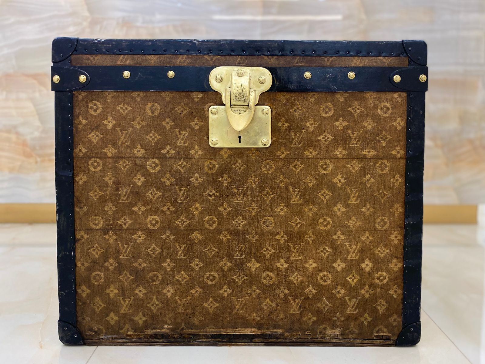
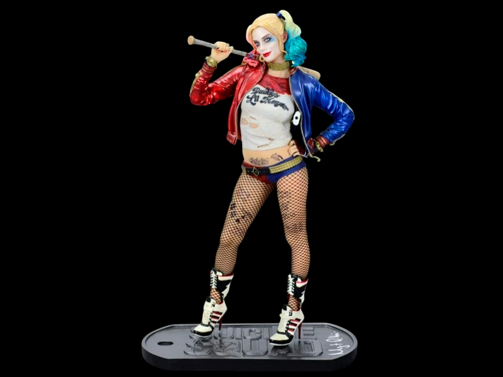
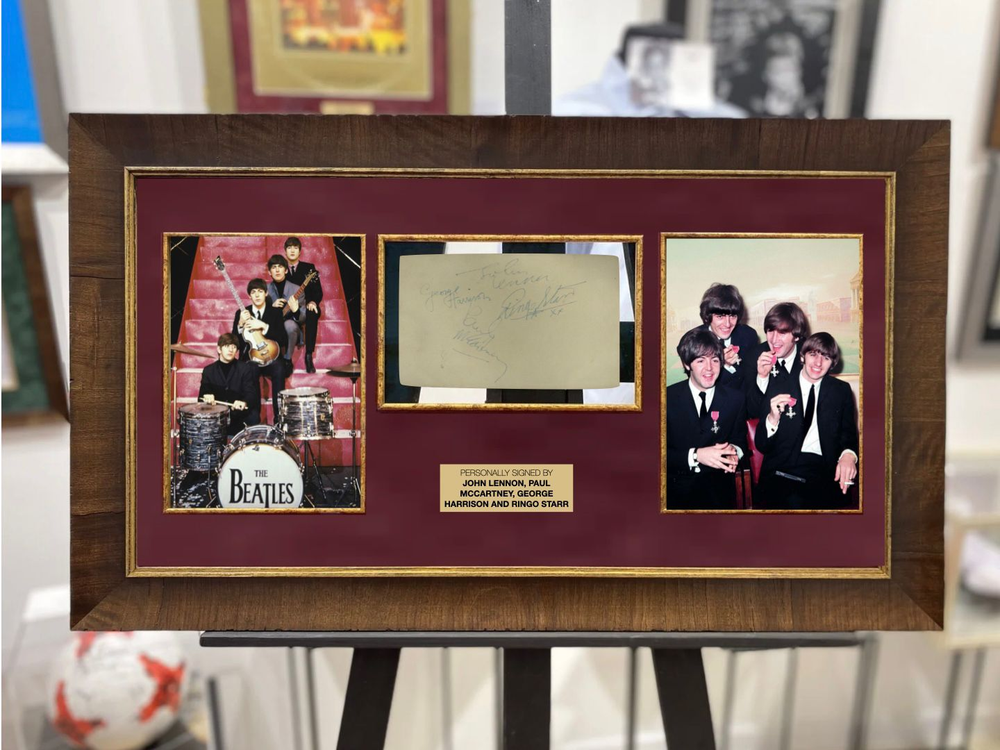

Stargift · Витрина сезона
Лето. Сезон
Лето — короткий сезон, в который умещается Уимблдон, Монте-Карло, Ривьера, фестивальные сцены и первый шаг по Луне. Здесь собраны предметы, за которыми стоят эти сюжеты.
Июль 2026

Трасса
Михаэль Шумахер — шлем, использованный в Гран-при Малайзии 1999 года
Михаэль Шумахер — немецкий автогонщик-рекордсмен «Формулы-1», семикратный чемпион мира. Гран-при Малайзии стал первой гонкой после травмы, полученной в Великобритании в 1999 году: после трёх месяцев отсутствия он с первой квалификационной попытки занял первую строчку.
17 500 000 ₽

Айртон Сенна — бутылка Moët с награждения Гран-при Монако 1993 года
Гран-при Монако 1993 года Сенна выиграл в шестой раз и побил рекорд Грэма Хилла, «короля Монако», державшийся 24 года. С этой же трассы началась его карьера: в 1984 году за рулём скромного «Toleman-Hart» бразилец впервые поднялся на пьедестал Гран-при.
4 500 000 ₽

Энцо Феррари — брошюра с автографом
Энцо Феррари — конструктор, основатель автомобильной компании и гоночной команды «Феррари». Его команда впервые вышла на старт «Формулы-1» в 1950 году, а уже в следующем сезоне выиграла первенство — победу принёс Хосе Фройлан Гонсалес.
1 150 000 ₽

Кэрролл Шелби — мини-модель Ford Shelby Mustang с автографом
Кэрролл Шелби — американский автогонщик, дизайнер и предприниматель, основатель Shelby American. Он создал Shelby Cobra и работал над проектом Ford GT40, который в 1966 году впервые принёс Форду победу в гонке «24 часа Ле-Мана», а затем — над линейкой Ford Shelby Mustang.
630 000 ₽

Louis Vuitton — дорожный сундук конца XIX века
Первым влиятельным поклонником чемоданов Луи Вюиттона стала императрица Евгения, жена Наполеона III. В 1896 году его сын Жорж ввёл против подделок логотип со скрещенными инициалами LV и тремя цветочными мотивами. Сундук более ста лет хранился в петербургской семье и передавался через три поколения.
2 650 000 ₽

Грейс Келли — фото с автографом
Грейс Келли — американская актриса, с 1956 года супруга князя Ренье III, 10-я княгиня Монако. Немногим более десяти фильмов, один «Оскар» и слава самой кассовой актрисы своего времени; Альфред Хичкок называл её своей музой. На фото она снята с мужем, сыном Альбером и дочерьми Каролиной и Стефанией.
450 000 ₽

Экран
Одри Хепбёрн — фото с рукописным пожеланием и автографом
Одри Хепбёрн — британская актриса, третья в списке величайших актрис американского кино по версии Американского института киноискусства. Звездой её сделали «Римские каникулы», иконой — «Завтрак у Тиффани». Текст обращения: «To Rick Hello from Switzerland Audrey Hepburn 1991».
1 250 000 ₽

Джордж Лукас — сценарий фильма «Звёздные войны» с автографом
Джордж Уолтон Лукас-младший — американский кинопродюсер, сценарист, режиссёр, монтажёр, оператор и предприниматель. Наиболее известен как создатель фантастической саги «Звёздные войны» и серии приключенческих фильмов об Индиане Джонсе.
650 000 ₽
PSA/DNA

Марго Робби — фигурка из фильма «Отряд самоубийц» с автографом
Марго Робби — австралийская актриса и продюсер, известная по «Волку с Уолл-стрит», «Однажды в Голливуде» и образу Харли Квинн. Комиксы о Харли Квинн ей часто дарили на Рождество в детстве, и накопленные знания о персонаже она использовала при подготовке к роли в фильме 2016 года.
400 000 ₽

Леонардо ДиКаприо и Кейт Уинслет — фото с двумя автографами
«Титаник» Джеймса Кэмерона вышел в 1997 году и получил 11 премий «Оскар», включая награды за лучший фильм и лучшую режиссуру. Для ДиКаприо картина стала началом мировой известности; Уинслет к тому времени в двадцать лет уже получила первую номинацию на «Оскар» за «Разум и чувства».
400 000 ₽

The Beatles — автографы четырёх участников группы
The Beatles — британская рок-группа из Ливерпуля, основанная в 1960 году. Прежде чем остановиться на этом названии, коллектив успел побывать The Black Jacks, The Quarrymen, Rainbows, Beatals, Silver Beats и Silver Beatles. Кто именно придумал слово Beatles, однозначного ответа нет до сих пор.
4 600 000 ₽
Beckett

Владимир Высоцкий — собственноручное письмо
Письмо адресовано кинорежиссёру Геннадию Полоке, Москва, 9 июля 1974 года, и посвящено работе над фильмом «Одиножды один». Текст письма: «Дорогой Гена! Я огорчен только тем, что снова мы не работаем вместе. Я все подстроил под это, но... се ля ви. Комитет сильнее нас».
4 000 000 ₽
Двадцать пять предметов из разных разделов собрания, сведённые вместе по одному признаку — по сезону, которому они принадлежат.
stargift.ru